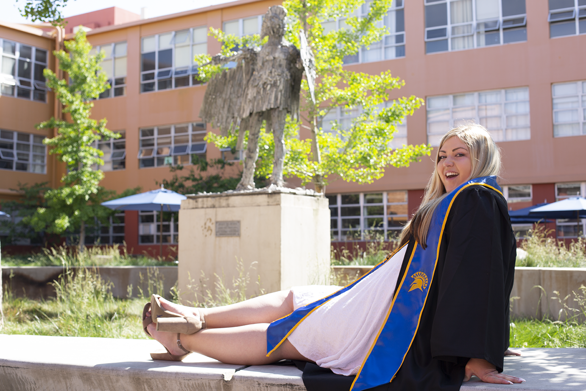
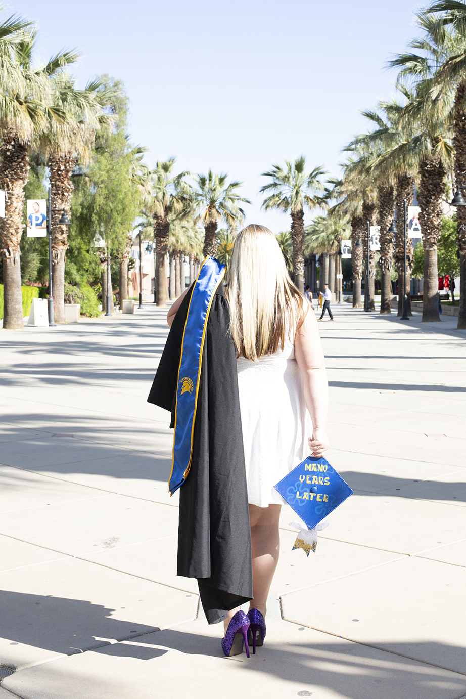
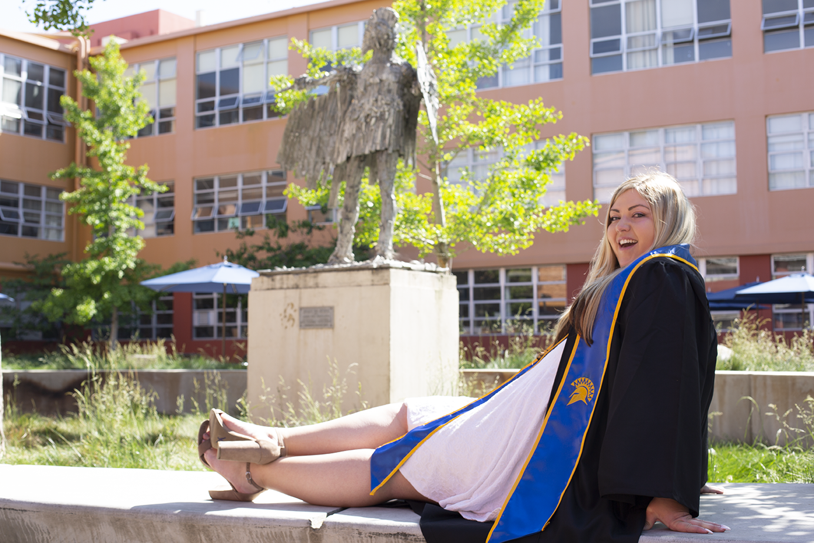
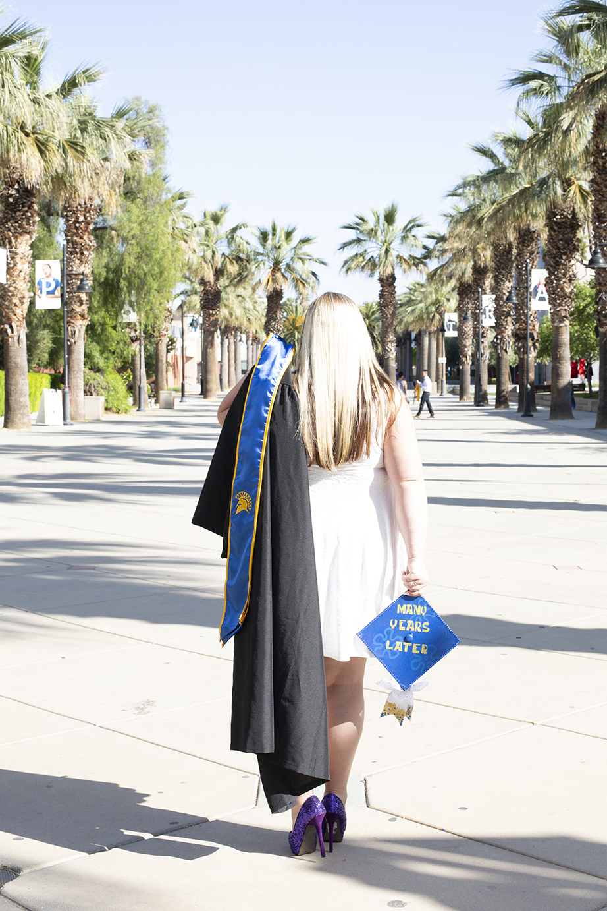

The pieces I create cannot be categorized by just pertaining to just once area but instead every piece pertains to some particular are unique. I like to use different mediums to create my work but the majority of by work in composed digitally due to my graphic design background. I like color so I do feel the need to include that in my pieces. My recent pieces have dealt with social issues that affecting the U.S. now and also affecting other countries too. I want my work to focus on current issues but also I want to create pieces that give people joy through my design work.
This semester I was introduced to many forms of art beginning with traditional print making to create works such as letterpress, etching plate, linoleum craving. For the new forms of creating work digitally was through creating artwork that lives on the internet as a designer I work with digitally but the final production is alway in print so that was a change from what I have done through out my years of school. I plan to continue on further exploring the medians I have learned to create my future artworks because through my experience this year using the appropriate medium for my concept really do strengthen the impact of my pieces.


 


